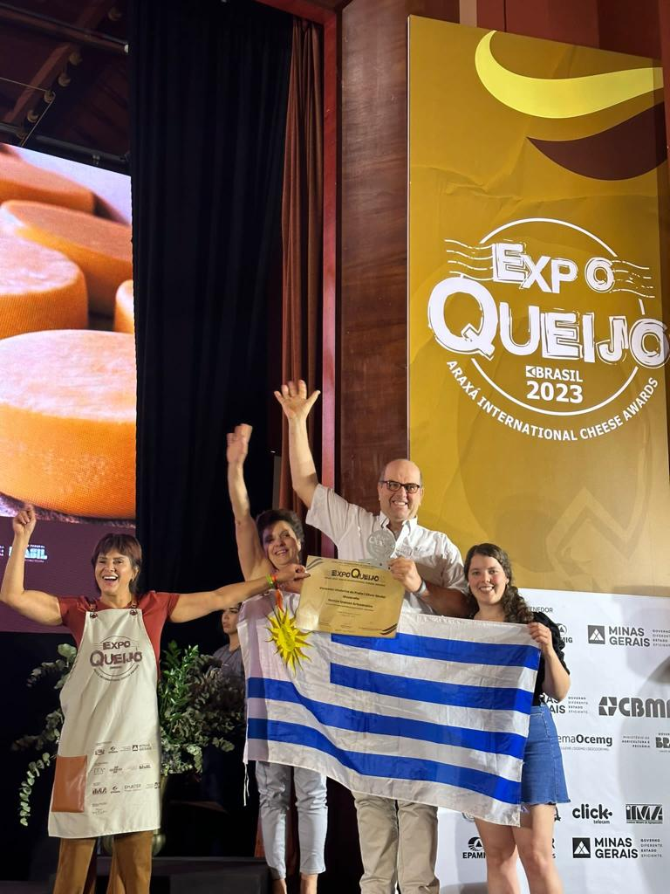
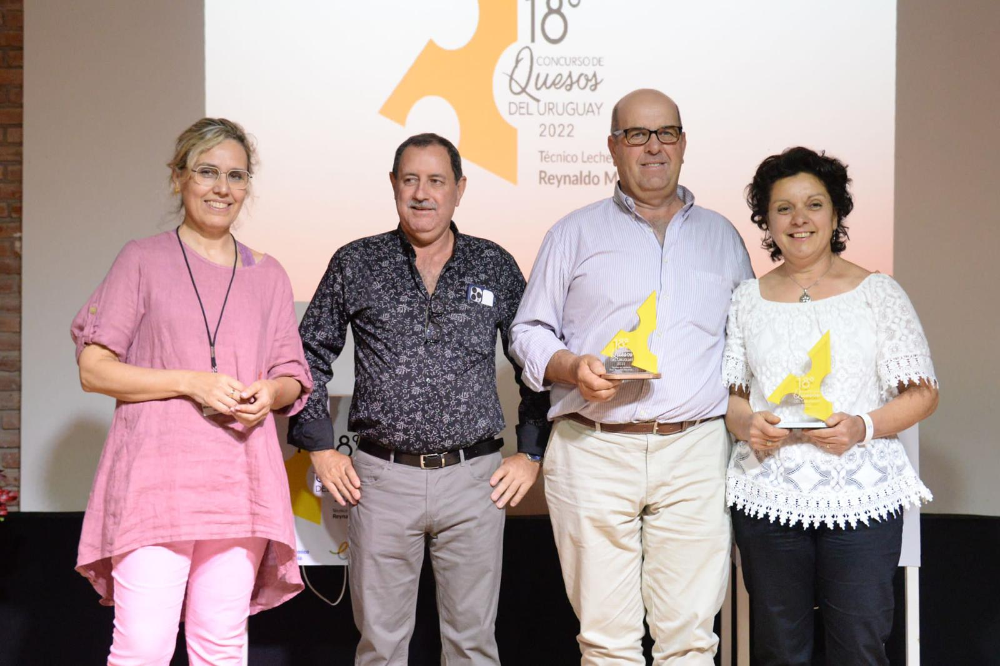
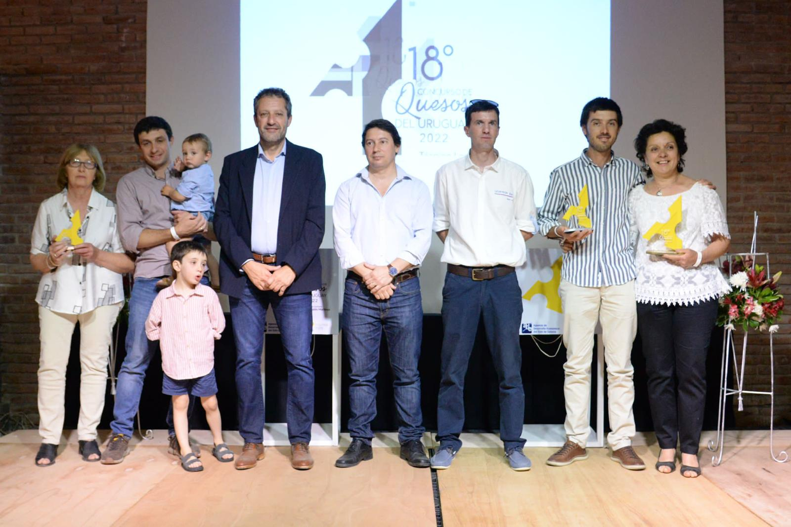
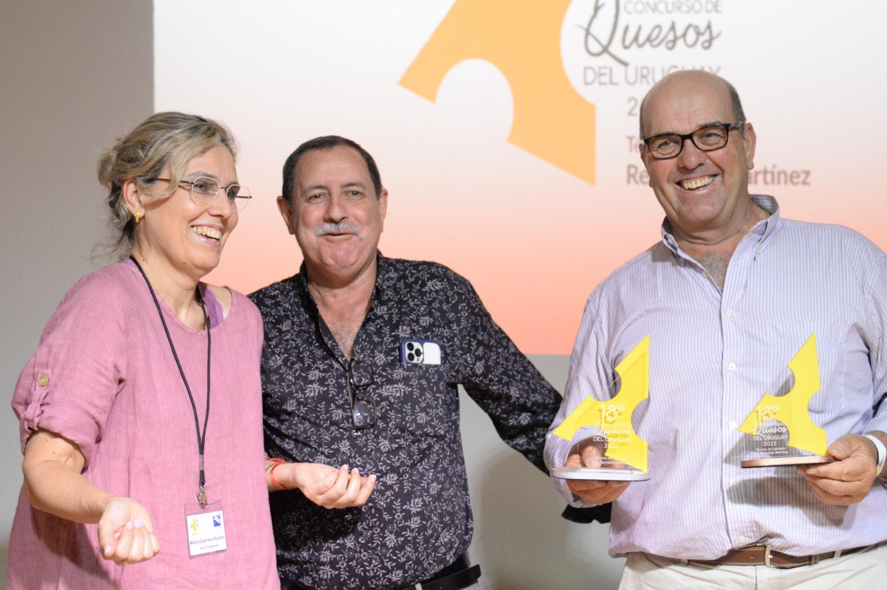
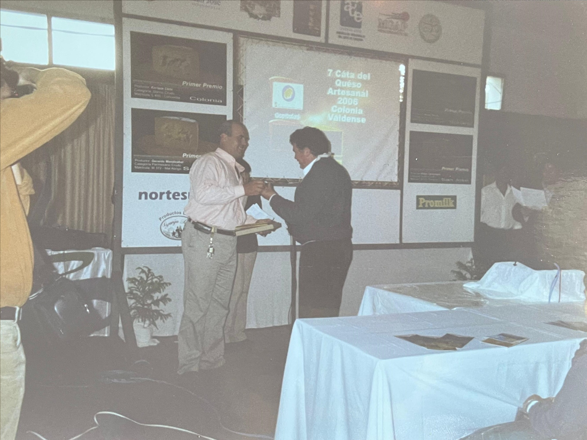
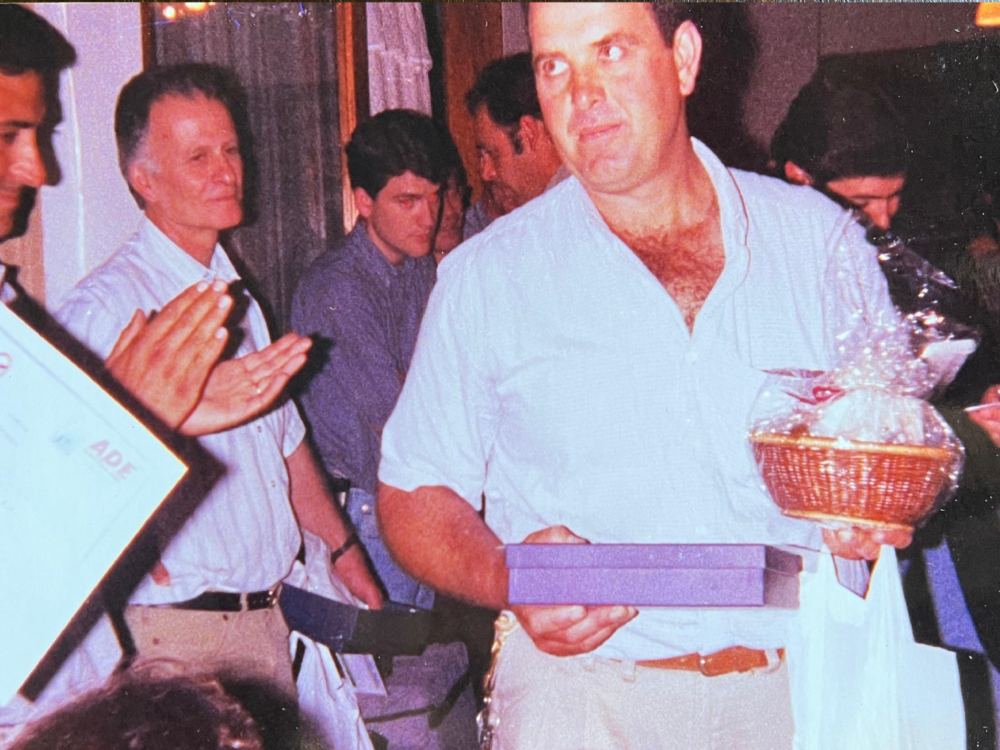

RECONOCIMIENTOS
Una historia
premiada.
Años de trabajo, oficio y búsqueda constante de calidad, reconocidos en concursos nacionales e internacionales.

RECONOCIMIENTO INTERNACIONAL · 2023
Expo Queijo Brasil
Medalla de Plata · Queso Muzarella
Araxá International Cheese Awards · Brasil
Concurso Nacional de Quesos “La Cata”
2024
- 2º Premio · Queso Sbrinz
- 3º Premio · Queso Gruyere
- 3º Premio · Queso Magro
- 3º Premio · Queso Dambo
- 3º Premio · Queso Cremoso
- Mención · Queso Muzzarella
- Mención · Queso Cuartirolo
- Mención · Queso Pepato
- Mención · Queso Dambo al vacío
- Mención · Queso Colonia
- Mención · Queso Parmesano
2022
- 1º Premio · Queso Cuartirolo
- 2º Premio · Queso Cremoso
- 2º Premio · Queso Magro con sal
- 2º Premio · Queso Muzzarella
- 2º Premio · Queso Parmesano
- 3º Premio · Queso Magro sin sal
- 3º Premio · Queso Colonia
- Mención Innovador · Queso Pepato



2018
- 3º Premio · Queso Sbrinz
- 2º Premio · Queso Cuartirolo
- 2º Premio · Queso Magro con sal
- 3º Premio · Queso Gruyere
- 1º Premio · Queso Muzarella
- 3º Premio · Queso Colonia
- 3º Premio · Queso Dambo
2015
- 1º Premio · Queso Parmesano
- 1º Premio · Queso Cacciocavallo
2014
- 1º Premio · Queso Colonia
- 1º Premio · Queso Gruyere (categoría internacional)
- 1º Premio · Queso Gruyere
2013
- 3º Premio · Queso Gruyere (categoría internacional)
- 3º Premio · Queso Gruyere
- 2º Premio · Queso Parmesano
- 3º Premio · Queso Cacciocavallo
- 2º Premio · Queso Colonia
- 3º Premio · Queso Sbrinz
2012
- 3º Premio · Queso Cacciocavallo
- 3º Premio · Queso Cacciocavallo (categoría internacional)
- 3º Premio · Queso Colonia sin sal
- 2º Premio · Queso Parmesano (categoría internacional)
- 2º Premio · Queso Parmesano
- 1º Premio · Queso Dambo
- 1º Premio · Queso Dambo (categoría internacional)
- 2º Premio · Queso Colonia
2011
- 1º Premio · Queso Parrillero
- 3º Premio · Queso Cacciocavallo
- 3º Premio · Queso Colonia
- 3º Premio · Queso Parmesano
- 3º Premio · Queso Sbrinz
- 1º Premio · Queso Dambo (categoría internacional)
- 2º Premio · Queso Parrillero (categoría internacional)
- 3º Premio · Queso Cacciocavallo (categoría internacional)
2010
- 2º Premio · Queso Muzarella
- 1º Premio · Queso Dambo
- 2º Premio · Queso Parrillero
- 2º Premio · Queso Colonia sin sal
- 1º Premio · Queso Colonia
- 1º Premio · Queso Sbrinz
2009
- 1º Premio · Queso Muzarella
- 2º Premio · Queso Parmesano
- 1º Premio · Queso Colonia
- 2º Premio · Queso Dambo
- 1º Premio · Queso Sbrinz
- 2º Premio · Queso Colonia sin sal
- Gran Campeón · Queso Colonia
2008
- 1º Premio · Queso Colonia
- 3º Premio · Queso Parmesano
- 3º Premio · Queso Sbrinz
2007
- 1º Premio · Queso Colonia
- 1º Premio · Queso Sbrinz
2006
- 1º Premio · Queso Sbrinz
- 1º Premio · Queso Colonia
- 1º Premio · Queso Parmesano

7ª Cata del Queso Artesanal · 2006
Primeras participaciones de Rostán en La Cata2005
- 1º Premio · Queso Colonia
- Mención · Queso Sbrinz
2004
- 1º Premio · Queso Sbrinz
- 1º Premio · Queso Colonia
2003
- 1º Premio · Queso Colonia
- 1º Premio · Queso Sbrinz
2002
2001
- Mención especial · Queso Dambo
- 1º Premio · Queso Colonia
2000
- 1º Premio · Queso Colonia
CONCURSO NACIONAL DE CALIDAD DE LECHE
2010
3º Premio